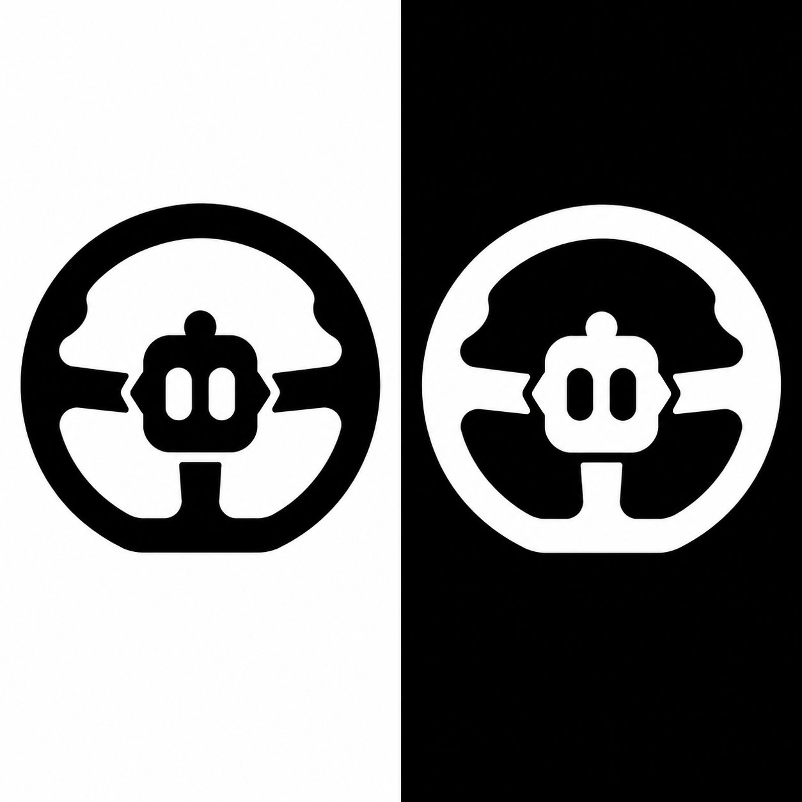
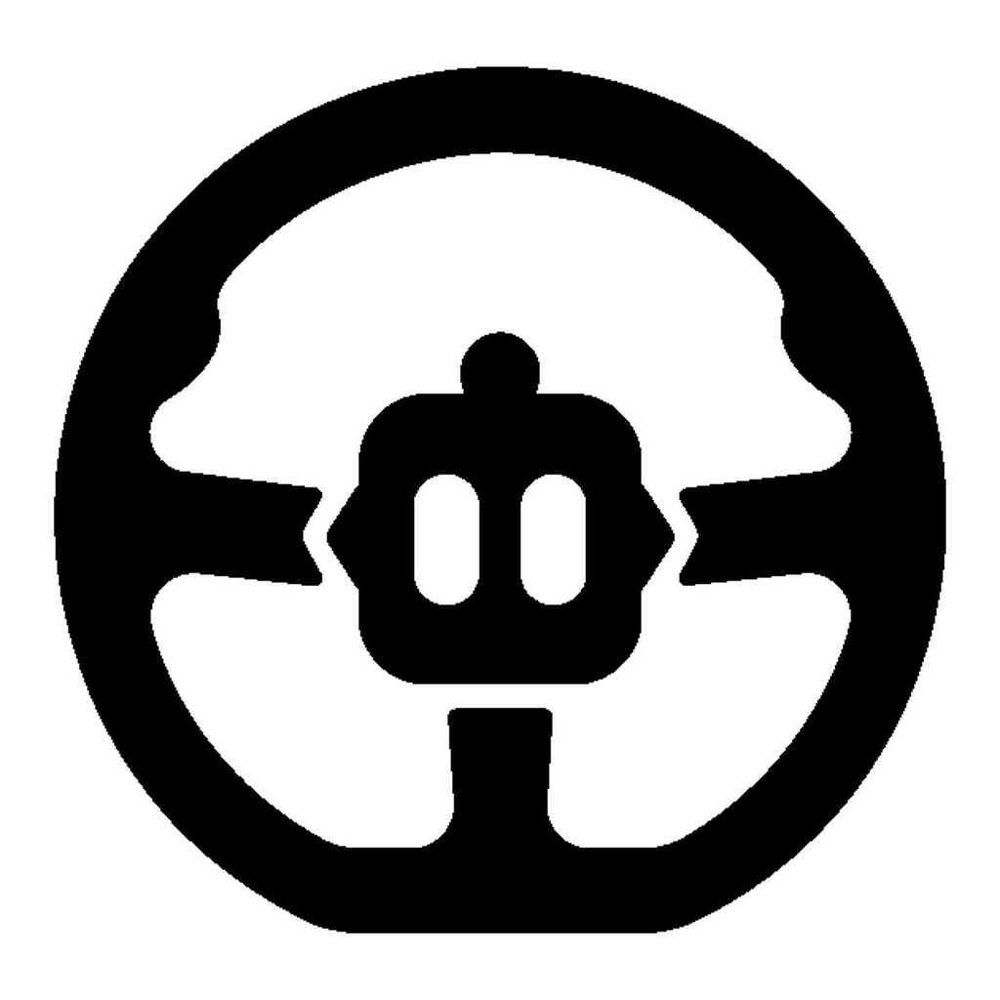

Drive mark verification
Production comparison for the approved angular-shoulder, notched-spoke mark. Toggle the surface and inspect the real runtime raster at its target sizes.
Archived approved reference

SHA-256 d7f89cad545dfbb87cb0e119c56d5fbd3baa1bb23f5b0de2ca919f7a36f0bcb3
Runtime tier
Install tier
